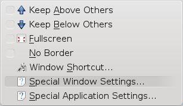
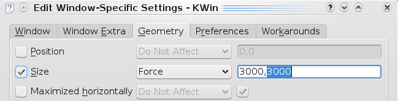

March 17th, 2009
| Tags: Abduction!, firefox, google maps, jpg, png, save, store
I’m using my old Palm TX to navigate during my travels. I don’t have GPS, but I usually get some maps from the web, store them as jpg and view on Palm as a picture.
I had problems to get big maps from Google to jpg, because all screen snapshot programs can only get actual “screen” (usually just 1440×900).
My palm and other devices can handle much bigger images and it’s possible to scroll them. My laptop screen resolution was quite limiting… 
I found solution in KDE:
- Install Firefox add-on called Abduction!. It will allow you to save pages or part of the page as image (File -> Save Page As Image…)
- Run Firefox and chose your place in the map.
- Press ALT + F3 -> Advanced -> Special Windows Settings…
- Select Geometry tab and modify “Size” parameters:

{kind=link}
Advanced Windows Settings - KDE

{kind=link}
Edit Window Specific Settings Kwin
Then your Firefox should be much bigger (above screen borders) and you should be able to save “one big” page as image…
0 comments (107 views)